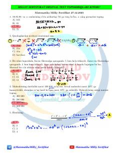

MMMatematika fanidan Milliy sertifikat imtihonlari uchun mo'ljallangan testlar to'plami.
Ushbu qo'llanma matematika fanidan Milliy sertifikat imtihonlari uchun mo'ljallangan original test topshiriqlari va ularning tahlilini o'z ichiga oladi. Kitobda algebra, geometriya va funksional tahlilga oid murakkab masalalar jamlangan.